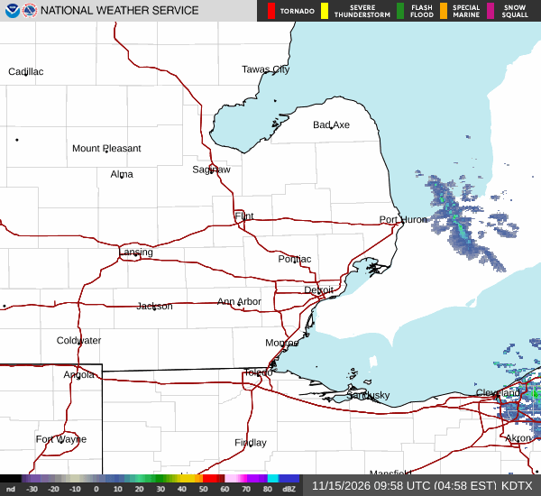

No hazardous weather expected (HWO)Roads: wet pavement only during rain windows above.
CLEAR
HAZARDOUS WX OUTLOOK
NONE
Today/Tonight: No hazardous weather is expected at this time. Days 2–7: No hazardous weather is expected at this time. HWO DTX · 424 AM EST Thu Nov 26 2026
48H RANGE
High 42°F Thu 2 PM · Low 34°F Thu 5 AM Max sustained wind 17 mph NE (Thu 5 PM) Max gust 36 mph (Thursday Night)
WEATHER INTEL · ROCHESTER HILLS, MI · SOURCE NWS / SPC01 / 07
WEATHER INTEL · SPEC OPSFETCHED NOV 26, 2026 · 5:10 AM EDT
Scheduled Ops
Calendar events matched to Rochester Hills · forecast for each event window
SCHEDULED OPS · NEXT 14 DAYS
Wed Dec 29:30 AM–11:00 AM ET
Niagara Updates37–39°F · precip 3% · wind ≤5 mph
GO
Flags: precip ≥40%, thunderstorms, sustained wind ≥20 mph, gusts ≥30 mph, temp ≤35°F or ≥88°F, any active NWS alert. Only title, time and location are shown.
WEATHER INTEL · ROCHESTER HILLS, MI · SOURCE NWS / SPC02 / 07
WEATHER INTEL · SPEC OPSFETCHED NOV 26, 2026 · 5:10 AM EDT
Current Conditions
KPTK · Pontiac, Oakland County International Airport · observed 4:55 AM ET
TEMP
37°F
Dewpoint 30°F · RH 75%
WIND
13mph
From E (80°) · gust none reported
VISIBILITY
10mi
Cloudy · pressure 30.3 inHg
DTX KEY MESSAGES · AFD 245 AM EST Thu Nov 26 2026
KEY
Gusty northeast winds today, with peak gusts of 30 to 40 mph (highest near the shorelines).
NWS DTX
KEY
Widespread rain develops this afternoon and evening and continues tonight into Friday, with around 1 inch of total rain expected. Wet snowflakes may mix in at times tonight into Friday.
NWS DTX
KEY
Another round of light rain is likely to end the weekend.
NWS DTX
CLIMATE NOTE
NOTE
A very dry air mass is in place over Southeast Michigan, as the 00Z DTX sounding checked in with a PW value of 0.19 inches, a 35 C dewpoint depression at 700 mb, and a 45 C dewpoint depression at 850 mb. Thus, most of today should be dry, though an aggressive moisture surge takes place between 18Z and 00Z as a 65+ knot easterly jet in the 850 to 700 mb layer lifts into the eastern Great Lakes. Latest water vapor imagery shows a large, negatively tilted trough axis east of the Mississippi River Valley with a deepening surface low just off the Carolina coast. The 500 mb low center is progged to swing through Tennessee today and through West Virginia tonight. Thus, it looks like we will be dealing with double-barreled low pressure centers or an elongated west-to-east low later today into this evening, keeping the deep/pseudo-tropical moisture (PW values > 1.5 inches) along the Eastern Seaboard. Still, sufficient moisture will extend westward into the central Great Lakes as PW values reach and exceed 0.75 inches, which is on the high end for late November standards. With excellent FGEN forcing lifting through this evening and deformation lingering through most of Friday, precipitation amounts are still expected to reach near 1 inch in many locations, with the Thumb region still primed to reach and exceed that mark. The 00Z DTX sounding indicated a warm 850 mb temp of 5 C, though with the abundant dry air, a good deal of wet-bulb cooling will take place. Increasing low-level easterly winds off Lake Erie will warm and accelerate the moistening of the low levels, sending dewpoints into the upper 30s to around 40 degrees for the south half of the CWA. Thus, there is not much concern for snow this afternoon into the evening hours. Modest wrap-around cold advection on the back side of the system will cool the column tonight into Friday as winds back to north-northwest, making it possible for snow to mix in mainly along and west of U.S. 23. However, snow still looks hard- pressed to accumulate with surface temps and dewpoints well into the 30s alongside wet ground conditions. If anything, it appears the NBM has trended a bit milder, indicating less of a snow chance. The strength of the low-level jet and pressure gradient today will support northeast wind gusts of 30 to 40 mph, per local probabilistic guidance. Precipitation drag should prevent gusts from getting much stronger than that, with the highest winds near the shoreline areas. Northwest winds on the back side Friday should come in a bit lower due to the lack of strong cold advection and an underwhelming (~15 mb) 6-hr pressure rise/fall couplet tracking through. Shortwave ridging and surface high pressure building into the Great Lakes will provide dry and tranquil conditions for the first half of the weekend, with daytime highs moderating back into the mid to upper 40s on Saturday under southwest return flow. By Sunday, attention turns to a progressive northern-stream shortwave tracking across the northern Great Lakes and a separate southern-stream wave lifting out of the Plains/Midwest. Current guidance favors these two disturbances remaining largely separate and unphased as they cross the region. Without constructive phasing to drive deeper cyclogenesis or prolonged moisture transport, forcing remains progressive supporting just a quick shot of rain showers late Sunday before drier air returns behind the departing cold front. && .MARINE... Pressure gradient between the 1043mb high over New England and developing low pressure in the Southeast U.S. continues increasing over the southern Great Lakes today. Small Craft Advisories cover east to northeast winds to 30 knots over Lake Erie, Lake St. Clair, and southern Lake Huron until Gale Warnings begin this afternoon. The strong low lifting out of the Carolinas toward the eastern Great Lakes further tightens the local gradient and and also brings widespread rain. A 40-50kt low-level jet wrapping around the north side of the low will be tapped into due to low-level cold advection and the relatively warm (10-12C) lake waters. This supports east to northeast gales by early afternoon across Lake Erie and St. Clair, and by late afternoon across Saginaw Bay and southern Lake Huron. Gusts up to 40kts are expected, especially Thursday evening and overnight. Gale Warnings remain in effect Thursday afternoon into the overnight period. Winds begin backing to the north/northwest and decrease to 20-30 knots by midday Friday as low pressure peels away from the region. && .PREV DISCUSSION... Issued at 1203 AM EST Thu Nov 26 2026 AVIATION... A potential MVFR cloud trend is the initial forecast issue for late tonight and in the morning. Observations leading up to midnight show little to no lower clouds over Lake Erie or southern Lake Huron leading up to midnight while the most recent hi-res model runs remain more aggressive at cloud redevelopment before sunrise. An additional supporting consideration is the sharp inversion sampled by the DTX 00Z sounding that is very favorable for ducting any new cloud development. All things considered, this update preserves the bulk of earlier forecasts that limited cloud to the DTW corridor but with delayed timing and tempo duration until observations become more supportive. Regardless of the morning cloud trends, there is still a brief break above 5000 ft that precedes impacts from the large mid Appalachians low pressure system. This system is on schedule to spread rain into SE Mi by late afternoon which progresses northward during Thursday evening. A few wet snowflakes are in reach as the profile wet bulbs and saturates at onset, however increasing rain intensity ends up the primary visibility restriction. NE wind also becomes a highlight with this system as gusts reach 30 knots mid afternoon into Thursday evening. DTW THRESHOLD PROBABILITIES... * Medium for ceiling at or below 5000 feet after 08z Thursday, then high after 18z. && .DTX WATCHES/WARNINGS/ADVISORIES... MI...None. Lake Huron...Gale Warning from 4 PM this afternoon to 5 AM EST Friday for LHZ363- 441>443-462>464. Small Craft Advisory until 1 PM EST this afternoon for LHZ421-422. Gale Warning from 1 PM this afternoon to 5 AM EST Friday for LHZ421- 422. Small Craft Advisory until 4 PM EST this afternoon for LHZ441>443. Lake St Clair...Gale Warning from 10 AM this morning to 4 AM EST Friday for LCZ460. Michigan waters of Lake Erie...Gale Warning from 10 AM this morning to 4 AM EST Friday for LEZ444. Small Craft Advisory until 10 AM EST this morning for LEZ444. && $$ DISCUSSION...SF MARINE.......ND/BT AVIATION.....BT You can obtain your latest National Weather Service forecasts online at www.weather.gov/detroit.
RADARKDTX LATEST SWEEP
NWS RIDGE

WEATHER INTEL · ROCHESTER HILLS, MI · SOURCE NWS / SPC03 / 07
WEATHER INTEL · SPEC OPSFETCHED NOV 26, 2026 · 5:10 AM EDT
Daily Outlook
Next 36 hours · NWS hourly forecast + gridpoint gusts · ET
Mostly cloudy. Low around 32, with temperatures rising to around 34 overnight. East northeast wind around 12 mph, with gusts as high as 20 mph.
Thanksgiving Day
43°F
Rain after 1pm. Cloudy. High near 43, with temperatures falling to around 40 in the afternoon. Northeast wind 12 to 17 mph, with gusts as high as 33 mph. Chance of precipitation is 100%. New rainfall amounts between a half and three quarters of an inch possible.
Thursday Night
34°F
Rain. Cloudy. Low around 34, with temperatures rising to around 36 overnight. Northeast wind 13 to 17 mph, with gusts as high as 36 mph. Chance of precipitation is 100%. New rainfall amounts between 1 and 2 inches possible.
Friday
42°F
Rain. Cloudy, with a high near 42. North northwest wind around 13 mph, with gusts as high as 23 mph. Chance of precipitation is 100%. New rainfall amounts between a quarter and half of an inch possible.
Friday Night
32°F
A chance of rain before 1am. Mostly cloudy, with a low around 32. West northwest wind 8 to 12 mph, with gusts as high as 23 mph. Chance of precipitation is 50%. New rainfall amounts less than a tenth of an inch possible.
Saturday
46°F
Partly sunny, with a high near 46.
Saturday Night
34°F
Mostly cloudy, with a low around 34.
Sunday
46°F
Rain after 7am. Cloudy, with a high near 46.
Sunday Night
33°F
Rain. Mostly cloudy, with a low around 33.
Monday
42°F
A slight chance of rain before 7am. Partly sunny, with a high near 42.
Monday Night
30°F
Partly cloudy, with a low around 30.
Tuesday
43°F
Partly sunny, with a high near 43.
Tuesday Night
32°F
Mostly cloudy, with a low around 32.
Wednesday
46°F
Mostly cloudy, with a high near 46.
WEATHER INTEL · ROCHESTER HILLS, MI · SOURCE NWS / SPC05 / 07
WEATHER INTEL · SPEC OPSFETCHED NOV 26, 2026 · 5:10 AM EDT
Radar & SPC
KDTX reflectivity · SPC convective outlooks
RADARKDTX LOOPLATEST
FETCHED 5:10 AM ET
SPCDAY 1
SPCDAY 2
WEATHER INTEL · ROCHESTER HILLS, MI · SOURCE NWS / SPC06 / 07
WEATHER INTEL · SPEC OPSFETCHED NOV 26, 2026 · 5:10 AM EDT
Forecast Discussion
NWS Detroit/Pontiac · 245 AM EST Thu Nov 26 2026
- Gusty northeast winds today, with peak gusts of 30 to 40 mph
(highest near the shorelines).
- Widespread rain develops this afternoon and evening and continues
tonight into Friday, with around 1 inch of total rain expected. Wet
snowflakes may mix in at times tonight into Friday.
- Another round of light rain is likely to end the weekend.
&&
.DISCUSSION...
A very dry air mass is in place over Southeast Michigan, as the 00Z
DTX sounding checked in with a PW value of 0.19 inches, a 35 C
dewpoint depression at 700 mb, and a 45 C dewpoint depression at 850
mb. Thus, most of today should be dry, though an aggressive moisture
surge takes place between 18Z and 00Z as a 65+ knot easterly jet in
the 850 to 700 mb layer lifts into the eastern Great Lakes. Latest
water vapor imagery shows a large, negatively tilted trough axis
east of the Mississippi River Valley with a deepening surface low
just off the Carolina coast. The 500 mb low center is progged to
swing through Tennessee today and through West Virginia tonight.
Thus, it looks like we will be dealing with double-barreled low
pressure centers or an elongated west-to-east low later today into
this evening, keeping the deep/pseudo-tropical moisture (PW values >
1.5 inches) along the Eastern Seaboard. Still, sufficient moisture
will extend westward into the central Great Lakes as PW values reach
and exceed 0.75 inches, which is on the high end for late November
standards. With excellent FGEN forcing lifting through this evening
and deformation lingering through most of Friday, precipitation
amounts are still expected to reach near 1 inch in many locations,
with the Thumb region still primed to reach and exceed that mark.
The 00Z DTX sounding indicated a warm 850 mb temp of 5 C, though
with the abundant dry air, a good deal of wet-bulb cooling will take
place. Increasing low-level easterly winds off Lake Erie will warm
and accelerate the moistening of the low levels, sending dewpoints
into the upper 30s to around 40 degrees for the south half of the
CWA. Thus, there is not much concern for snow this afternoon into
the evening hours. Modest wrap-around cold advection on the back
side of the system will cool the column tonight into Friday as winds
back to north-northwest, making it possible for snow to mix in
mainly along and west of U.S. 23. However, snow still looks hard-
pressed to accumulate with surface temps and dewpoints well into the
30s alongside wet ground conditions. If anything, it appears the NBM
has trended a bit milder, indicating less of a snow chance.
The strength of the low-level jet and pressure gradient today will
support northeast wind gusts of 30 to 40 mph, per local
probabilistic guidance. Precipitation drag should prevent gusts from
getting much stronger than that, with the highest winds near the
shoreline areas. Northwest winds on the back side Friday should come
in a bit lower due to the lack of strong cold advection and an
underwhelming (~15 mb) 6-hr pressure rise/fall couplet tracking
through.
Shortwave ridging and surface high pressure building into the Great
Lakes will provide dry and tranquil conditions for the first half of
the weekend, with daytime highs moderating back into the mid to
upper 40s on Saturday under southwest return flow. By Sunday,
attention turns to a progressive northern-stream shortwave tracking
across the northern Great Lakes and a separate southern-stream wave
lifting out of the Plains/Midwest. Current guidance favors these two
disturbances remaining largely separate and unphased as they cross
the region. Without constructive phasing to drive deeper
cyclogenesis or prolonged moisture transport, forcing remains
progressive supporting just a quick shot of rain showers late Sunday
before drier air returns behind the departing cold front.
&&
.MARINE...
Pressure gradient between the 1043mb high over New England and
developing low pressure in the Southeast U.S. continues increasing
over the southern Great Lakes today. Small Craft Advisories cover
east to northeast winds to 30 knots over Lake Erie, Lake St. Clair,
and southern Lake Huron until Gale Warnings begin this afternoon.
The strong low lifting out of the Carolinas toward the eastern Great
Lakes further tightens the local gradient and and also brings
widespread rain. A 40-50kt low-level jet wrapping around the north
side of the low will be tapped into due to low-level cold advection
and the relatively warm (10-12C) lake waters. This supports east to
northeast gales by early afternoon across Lake Erie and St. Clair,
and by late afternoon across Saginaw Bay and southern Lake Huron.
Gusts up to 40kts are expected, especially Thursday evening and
overnight. Gale Warnings remain in effect Thursday afternoon into
the overnight period. Winds begin backing to the north/northwest and
decrease to 20-30 knots by midday Friday as low pressure peels away
from the region.
&&
WEATHER INTEL · ROCHESTER HILLS, MI · SOURCE NWS / SPC07 / 07